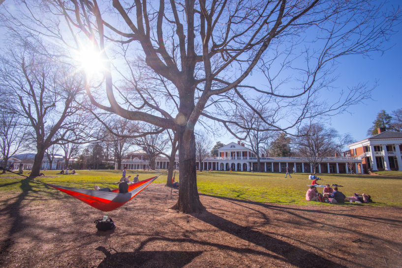
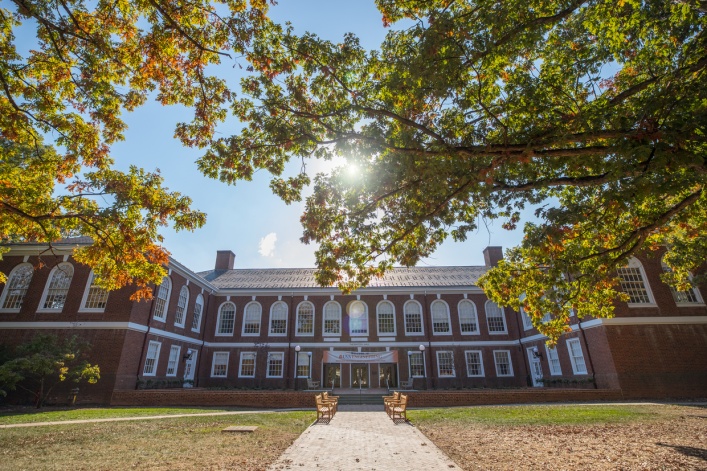
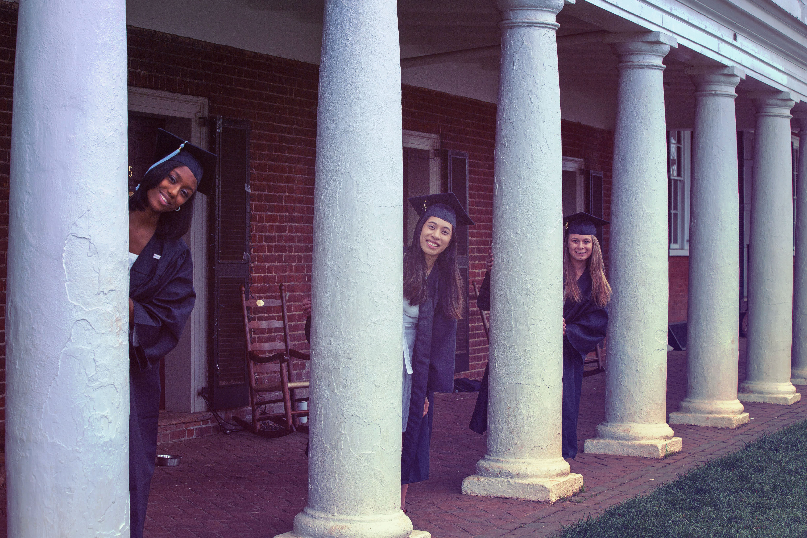
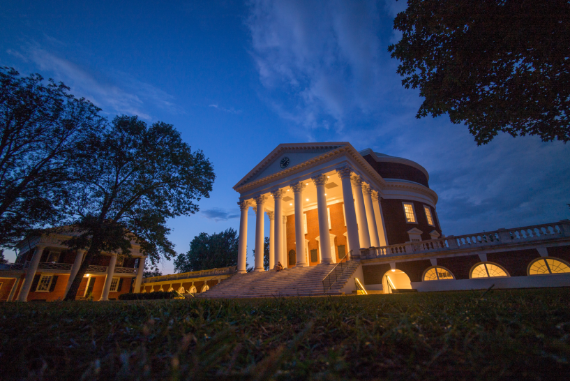

Greetings,
Naomi-Grace / NG / Naomi / Yomz, here.
In case you forgot what I look like
Mentioned previously in the email that brought you here, I am formally inviting you to see me walk across stages for 4+ hours. In other words, you are invited to partake in a ceremony called Graduation. Specifically mine 👩🏻🎓, and a few thousand others.
As you probably know, I've spent the past 17-ish years of my life in
formal schooling. Notably, in the last 4 years, I've been working hard to convince my current school
that I've learned enough about "how to tell computers what to do" 👩🏻💻 for them to
formally and officially recognize it.

Students chilling on the lawn (aka me after finals)
As of Tuesday, May 8th at 10:00 in the morning, I have them about 120 credits taken / 120 credits needed = 100.00% convinced they should let me graduate, but after one more final grade gets posted, I plan to have them 123 credits taken / 120 credits needed = 102.50% convinced. 🎓
For those of you that need a refresher, I go to The University of Virginia, or UVA. UVA was founded in 1819 by Thomas Jefferson and is known for its historic foundations, Jeffersonian architecture (The Rotunda being the most iconic on grounds), student-run honor code, and secret societies.

the Rotunda
Fact: when people play word association games, the words "fratty" and "exclusive" are among the top words to be associated with UVA. This graduation is going to be just that. Indeed, in typical "frat style," you must be on the list. (But instead of a list, there are tickets 🎟️.) Apparently this celebration is so grand, so epic, and so exclusive that it can only be seen by a few eyes. Thus, I've only been granted 6 tickets for each event.
What it looks like when all the graduates are sitting
I have carefully selected the people who deserve to witness these epic walks. The order has been
generated randomly by python.
Hannah Panlaqui
Brian Panlaqui
Vicky Panlaqui
Cromwell Panlaqui
Pia Panlaqui
August Panlaqui
Hannah Panlaqui
Brian Panlaqui
Vicky Panlaqui
Cromwell Panlaqui
Pia Panlaqui
August Panlaqui
If you are interested in how this was generated, I am pasting the python 🐍 code below:
import random
# list of invites alphabetically by first name
people_invited = ['August Panlaqui', 'Brian Panlaqui',
'Cromwell Panlaqui', 'Hannah Panlaqui',
'Pia Panlaqui', 'Vicky Panlaqui']
# shuffle randomly
random.shuffle(people_invited)
# display
for person in people_invited:
print(person)
Consider yourself very special. I'm so glad y'all are coming. :)
What it looks like when all the graduates are filing out
Now, what does this all entail? There will be 2 events I'll be co-staring in. Luckily they're around the same place (University of Virginia grounds) and same day (Saturday, May 19th). There are also Valedictory Exercises on grounds the day before on Friday, May 18th.
FRIDAY
MAY 18
Day of arrival. Check in at Holiday Inn Charlottesville-Monticello. Click links for relevant google maps directions for the day:
Ceremony 0: Valedictory Exercises
This ceremony will include a keynote address by alumnus Chris Long, an NFL champion and philanthropist. In addition to the keynote address, members of the class trustees will present the Class Gift and University and Class Awards.
Time: 3PM
Location ☀️: South end of the Lawn
Location due to sad weather 🌧️: John Paul Jones Arena (JPJ).
Notes: No tickets needed! However, none are trusted. Opt for a clear plastic
bag to bring your belongings
instead of a (man)purse. There will also be metal detectors.
SATURDAY
MAY 19
The big day. Click links for relevant google maps directions for the day. Also see the Lawn Overview and Guest Entrance Map which also indicates the locations of guests services throughout Central Grounds, including information booths, concession stands, and restrooms.
- Directions from hotel to my apartment
- (Walking) Directions from apartment to The Lawn
- (Walking) Directions from The Lawn to Thornton Hall's Darden Courtyard
- (Walking) Directions from Thornton Hall's Darden Courtyard to the apartment
- Directions from apartment to Mi Canton
- Directions from Mi Canton to hotel
- Directions from hotel to home (Fairfax)
Ceremony 1: Arts & Crafts Ceremony 🎨
This ceremony is the school-wide walk. This is the walk for the College of Arts of Sciences (aka College of Arts and Crafts), formally known as the Final Exercises in which I will walk with thousands of my closest friends mostly for kicks and giggles. Doubtful you'll be able to take pictures of me, let alone see me in the mass of people. On the bright side, you will be able to experience a long standing UVA tradition with me that I've been looking forward to for four years 😊
What really happens (from the uva finals website): Each May for Final Exercises, the graduating class, made up of undergraduate and graduate students alike, lines up around the Rotunda for the unforgettable procession down the Lawn. Tens of thousands of parents, guests and faculty members watch as the students make their way down the Lawn. The graduates sit facing away from the Rotunda, toward Old Cabell Hall, to symbolize their entrance into the world beyond the University, taking with them all of their experiences and the knowledge gained during their time on Grounds. Final Exercises begins at 10 a.m. with the procession down the Lawn. The ceremony lasts for approximately two hours.
Time: 10AM (rumor has it you should be there much
earlier than that)
Location ☀️: the Lawn in front of the Rotunda 🏛
Notes: Same deal as Friday, bring clear plastic bags and be prepared to go through
metal detectors.
If weather is sad 🌧️: Same time but at JPJ. In
the gravely unfortunate case that this happens, the attendee list will have to be shrunk to 3 :( The rest of you will have to watch from an overflow room.
Ceremony 2: CS-Lite Ceremony 🖥️
The second is my degree ceremony for Computer Science BAs (CS-lite kids) in which they'll give me the infamously expensive piece of paper along with all my other CS-lite friends. This is the ceremony in which my name will actually get called!
Time: 12:30PM (pretty much directly after the previous
ceremony)
Location ☀️: Thorton Hall's Darden Courtyard
Notes: My department is suggesting an arrival time of 30 minutes before (thus,
12:00 for the 12:30 and 3:00 if the weather is sad)
If weather is sad 🌧️: Same day but at 3:30 instead of 12:30. It will also be
moved to Slaughter Gym. This is where Callie and I had our Badminton class this past semester, so
we've discussed the possibility of getting out the supplies and hitting people with birdies. Callie
has a pretty aggressive serve though, so I would suggest wearing protective gear.
Other logistical things / FAQ️
Q. Can I park at your apartment for Ceremony 1? 🚗
A. No, I'm sorry. However, there will be free parking available with shuttle service to the Lawn from JPJ and Scott Stadium. You are also welcome to look for street parking near my apartment, but there is no shuttle. If you prefer not to shuttle, be prepared for a hilly 20 minute walk towards the lawn from my apartment.
Q. Where is Thornton Hall's Darden Courtyard (CS-lite/Degree Ceremony)?
A. It's very close to the lawn, just a short walk over the bridge and Thornton Hall will be on your left. If you pass the building and make a left right after it (there will be a sidewalk called Engineer's way), you can go down the stairs towards the building and enter the passageway into the building in which you should see the courtyard.
The front of Thornton hall
Q. What should we do in between ceremonies if it rains?
A. Ah, true. The degree ceremony is at 3:30 if it rains so you guys will have like 3ish hours to occupy. I'd reccommend driving to Historic Downtown Charlottesville, exploring the shops, and checking out the Virginia Discovery Museum for kids. You could also grab a bite to eat at this time.
Q. Speaking of bites to eat, will there be any food available? 🥪
A. Light breakfast items (doughnuts, pastries, muffins, fruit juice, soda, bottled water, and coffee) will be offered for sale. Food stands will be open from 8am to 2pm. Lunch items will be available beginning mid-morning. Food stand locations:
- McCormick Road near Garrett Hall (where most of the stands will be)
- west of the Rotunda near the Chapel (beverages only)
- on McCormick Road between Patterson and Colonnade Alleys (ice cream & lemonade)
- sidewalk between Thornton Hall and Chemical Engineering Research Building (beverages and
snacks)
- east of the Rotunda near Washington Hall (beverages only)
Q. Who is Callie? Who is Jewel?
A. Callie is my best friend and has the same program of study as me. I live with her alongside our other friend, Jewel. The three of us form the band JNC 🎸 (pronounced Jancy). The content of this static site is also based off an email she sent to her family :)
From left to right: Jewel, Naomi-Grace, Callie.
Q. Can we visit your apartment?
A. Yes, absolutely! Maybe you'll even hear a performance by JNC 🎹. No promises though. Also note that you will have to find street parking along 14th Street or Madison Avenue .
Q. What are we doing after all the ceremonies are over?
After all the ceremonies have ended, I plan to take you all out to eat at a delicious El Salvadorian eatery, Mi Canton. Click the link for their menu if you would like to plan in advance. I always get their papusas when I'm there, but I hear their other food options are also amazing. Sketchy area, sketchy interior, but great food.
That's all for now as the sun is about to set on my undergraduate career. I have learned so much in
these last four years and although I'm feeling a bit sad, I also couldn't be happier to celebrate this
occasion with you all (assuming you will all be there. It's supposed to be pretty cool tho). Thank you
so much for all your love and support over these years. It really means a lot to me. ❤️
Respectfully,
Naomi-Grace Panlaqui
UVA 2018
Computer Science

Rotunda at dusk